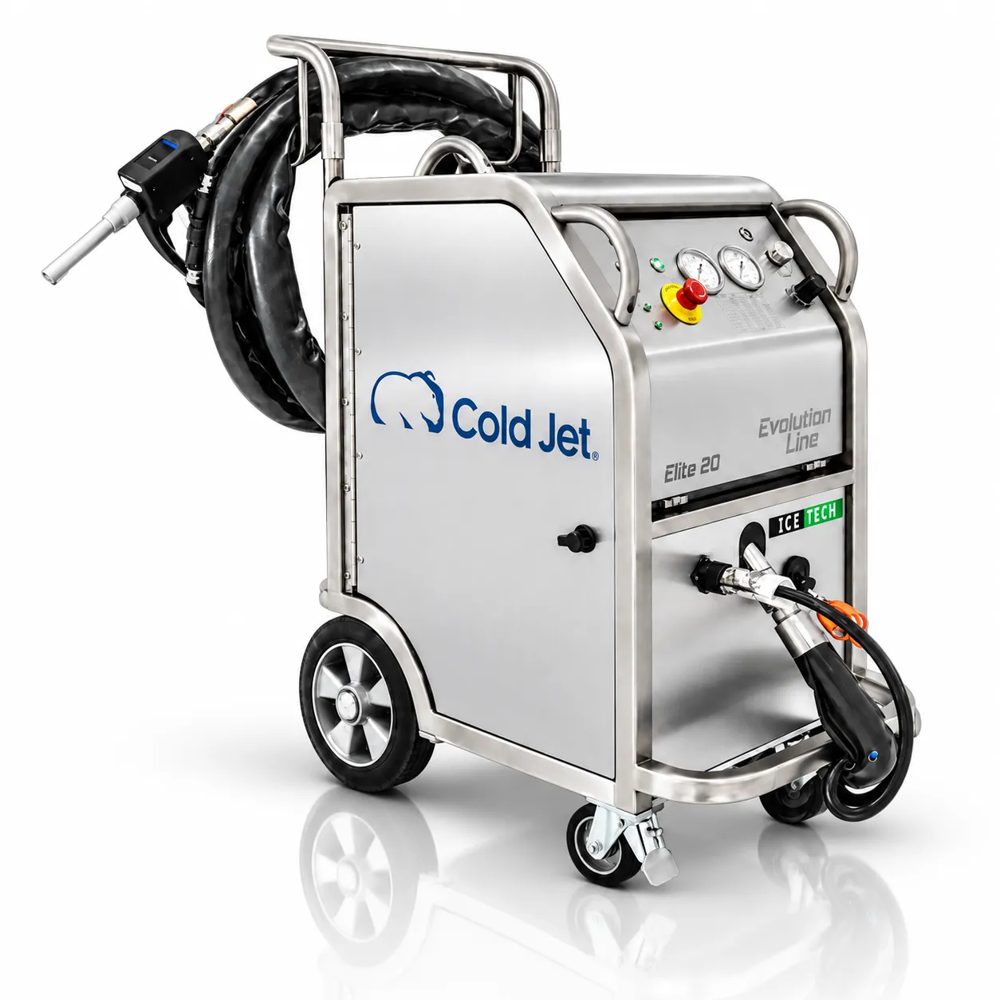
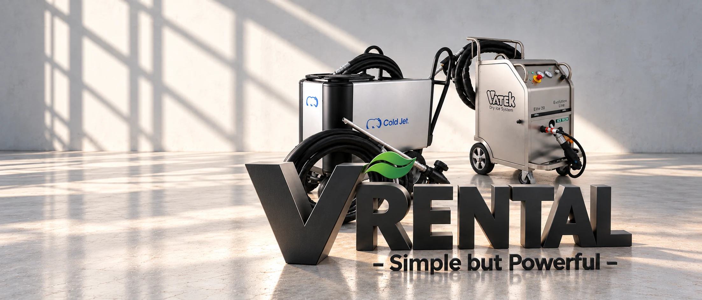
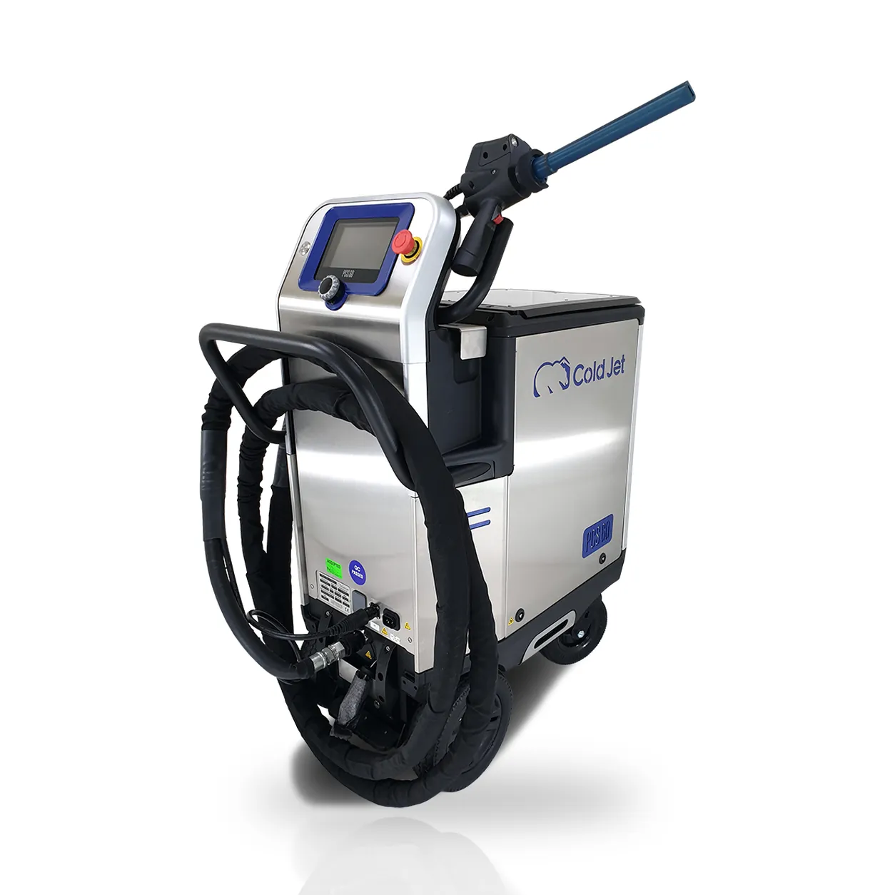
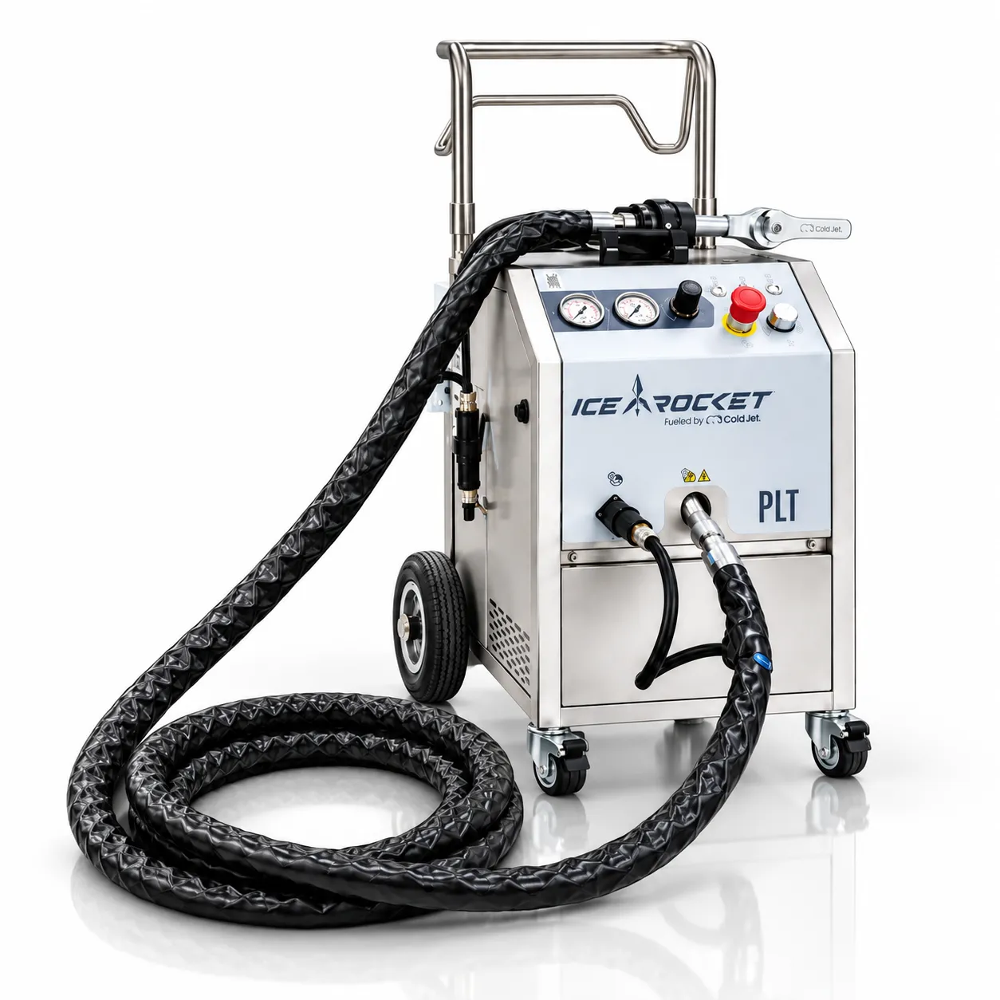
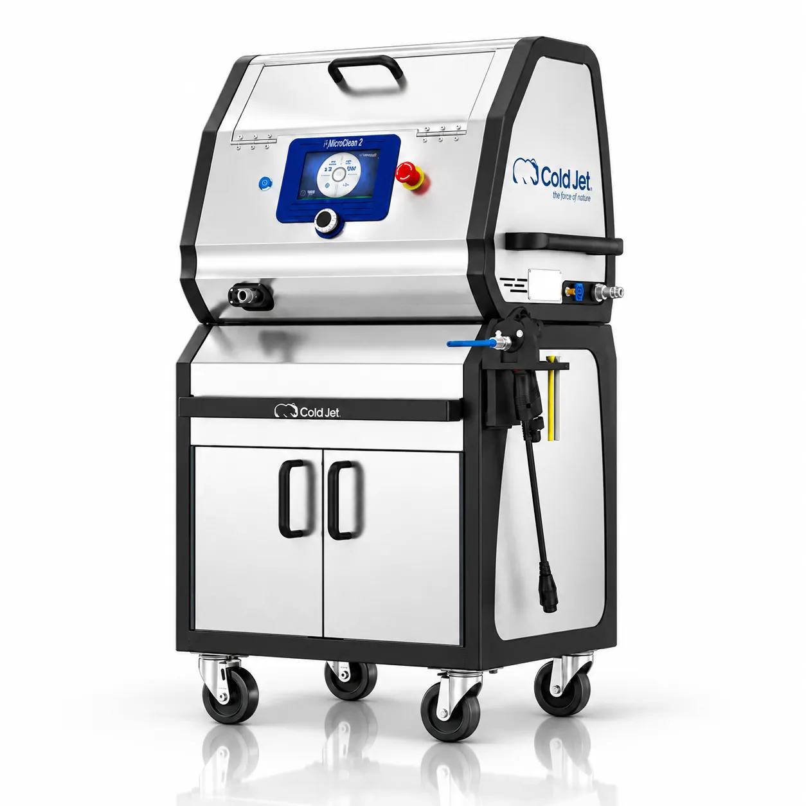
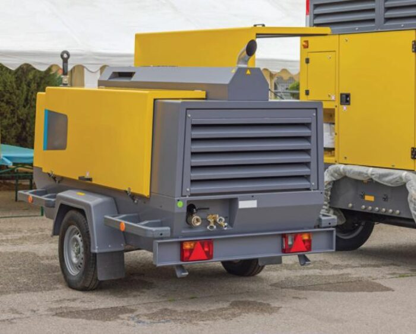

BEST SELLER

PELLET / GENERAL
Elite 20
가장 많이 나가는 범용 모델입니다. 금형, 생산 설비, 자동차 하부처럼 일반 산업 세척 대부분을 이 한 대로 처리합니다.
- 압축공기
- 30 Hp 이상5 bar 지속 조건
- 배관
- ¾″ 권장
- 전원
- 220 V, 60 Hz

정기적인 세정이 필요하지 않거나 특정 작업에만 장비가 필요하다면, 필요한 기간만 렌탈해 사용할 수 있습니다.
Cold Jet 정품 블라스터를 단기 또는 월 단위로 이용할 수 있으며, 현장에 압축공기 공급이 어려운 경우에는 50 Hp 디젤 콤프레서도 함께 렌탈할 수 있습니다.
질문 네 가지에 답하면 결과가 바로 나옵니다.
0 / 4요금과 재고는 모델과 시점에 따라 달라지므로 상담으로 확인하실 수 있습니다. 직접 운용이 어렵다면 인증 세척용역 업체에 작업을 맡길 수도 있습니다.

가장 많이 나가는 범용 모델입니다. 금형, 생산 설비, 자동차 하부처럼 일반 산업 세척 대부분을 이 한 대로 처리합니다.

펠렛 크기를 다이얼로 바꿔 강한 세척과 정밀 세척을 한 대로 오갑니다. 대상이 여러 가지인 현장, 실내 작업에 적합합니다.

작고 가벼워 이동이 잦은 작업과 좁은 공간에 맞습니다. 20 Hp 콤프레샤로 운용할 수 있어 압축공기 여유가 적은 현장에도 들어갑니다.

블록 드라이아이스를 얇게 깎아 미세 입자로 분사하는 정밀 세척용입니다. 전자 부품, 정밀 금형, 식품 설비처럼 표면 영향을 줄여야 할 때 씁니다.

※ 참고용 이미지입니다. 실제 렌탈 콤프레샤는 이 이미지와 다를 수 있습니다.
블라스터가 필요한 곳에 콤프레샤가 없거나 용량이 모자라는 경우가 있습니다. 이때는 바테크의 파트너사(전문 콤프레샤 렌탈사)가 보유한 50 Hp 이동식 디젤 콤프레샤를 블라스터와 같은 일정으로 추가 렌탈할 수 있습니다. 콤프레샤는 블라스터와 별도의 렌탈 품목이므로 렌탈 요금이 따로 적용되며, 견적 상담 때 함께 안내해 드립니다. 네 모델의 요구 용량을 모두 넘는 사양이어서 어느 블라스터와도 함께 사용할 수 있습니다.
디젤 콤프레샤만 운용합니다. 연료, 설치 위치, 운반 조건과 렌탈 요금은 상담 시 안내합니다.
복잡한 심사는 없습니다. 신청서와 계약서, 송금이 확인되면 렌탈일이 확정되고 지정한 장소로 장비가 갑니다.
회원가입 후 온라인 신청서에 장비, 기간, 배송지를 선택해 제출합니다.
고객사바테크가 일정을 확인해 보낸 계약서에 동의하고 렌탈비를 송금하면 렌탈일이 확정됩니다.
고객사출고 전 시험 작동을 마친 장비를 지정한 장소로 배송합니다.
바테크렌탈 기간이 끝나면 기본 구성을 갖춰 반송합니다.
고객사상태를 확인하면 렌탈이 완료되고, 구매나 재렌탈에 쓸 수 있는 할인권을 드립니다.
바테크렌탈로 효과를 확인한 뒤 구매로 이어지는 경우가 많습니다. 렌탈 종료 시 지급되는 할인권과, 월 단위로 쓰다가 인수하는 렌탈 후 인수 방식을 구매 단계에서 함께 검토할 수 있습니다.
결제 방식 보기 →렌탈 장비는 바로 세척을 시작할 수 있는 기본 구성으로 나갑니다. 아래 조건은 계약서에도 같은 내용으로 들어가며, 장비를 오래 좋은 상태로 유지해 다음 사용자에게도 같은 품질로 전달하기 위한 것입니다.
렌탈 블라스터 한 대에 아래 다섯 가지가 함께 갑니다.
추가 노즐, 연장 호스 등 액세서리는 함께 렌탈할 수 있습니다. 종류는 노즐 및 액세서리에서 확인하세요.
요금, 운영 시간 기준, 손상 처리 기준 등 세부 조건은 상담 및 계약 단계에서 안내합니다.
모델까지 정해졌다면 렌탈 상담으로, 효과부터 확인하고 싶다면 하루짜리 데모 테스트로, 아직 어떤 장비가 맞는지 모르겠다면 장비 비교부터 시작하는 것이 빠릅니다.
회원가입 후 장비, 악세서리, 기간, 배송지를 선택해 신청서를 제출하면 영업담당자가 재고와 일정을 확인해 연락합니다. 콤프레샤 동반 여부도 함께 정합니다.
렌탈 신청 → DEMO TEST렌탈보다 짧게, 실제 시료로 세척 효과만 먼저 확인합니다. 결과는 전후 사진과 조건으로 정리해 드려 내부 검토 자료로 쓸 수 있습니다.
데모 신청 → COMPARE세척 대상과 현장 조건을 고르면 적합한 블라스터를 추천합니다. 렌탈 모델 네 종 중 어느 것이 맞는지 여기서 먼저 좁힐 수 있습니다.
장비 비교 →렌탈을 검토할 때 가장 많이 묻는 질문입니다. 그 밖의 조건은 상담 시 안내합니다.
단기부터 월 단위까지 가능하며, 임대 기간은 출고일부터 반납일까지로 계산합니다. 기간에 따른 요금 조건은 상담 시 안내합니다.
바테크가 장비와 함께 공급합니다. 렌탈 장비에는 바테크 드라이아이스만 사용하는 조건이 있으며, 사용량은 작업 시간과 노즐에 따라 달라지므로 상담 시 예상량을 함께 안내합니다.
배송 시 기본 조작과 안전 수칙을 안내하고, 모델별 실물 조작 영상을 함께 제공합니다. 사용 중 이상이나 궁금한 점은 영업팀(031-796-4300)으로 바로 연락하실 수 있습니다.
가능합니다. 렌탈 종료 시 지급되는 할인권을 구매에 쓸 수 있고, 월 단위로 쓰다가 인수하는 렌탈 후 인수 방식도 있습니다. 조건은 구매 프로세스 안내에서 확인하세요.
세척 대상과 기간, 배송지, 압축공기 조건을 알려 주시면 가능한 모델과 일정, 견적을 확인해 안내합니다. 콤프레샤가 필요한지도 함께 정합니다.
바테크는 Cold Jet 대한민국 공식 대리점으로 렌탈부터 데모, 구매, 교육, A/S까지 한 창구에서 지원합니다.